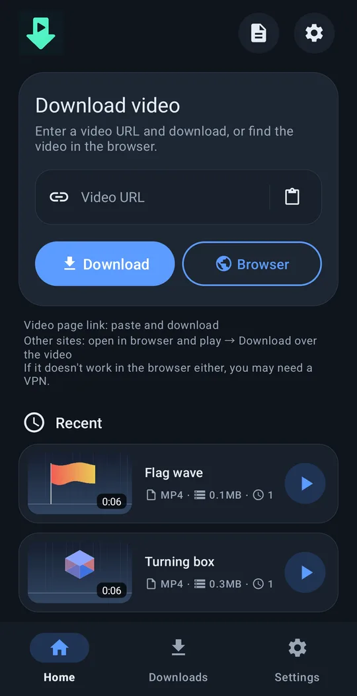
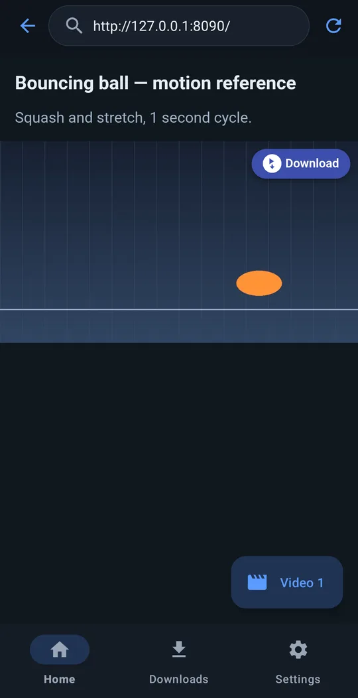
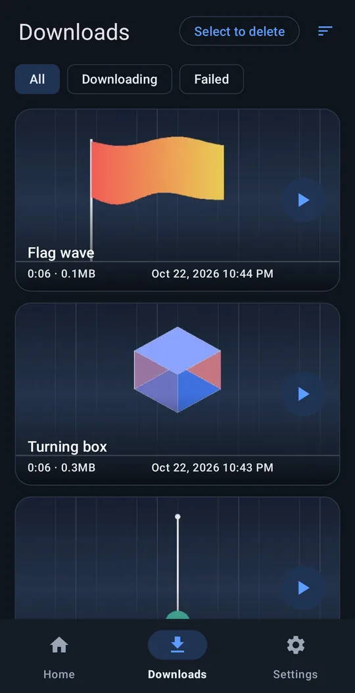
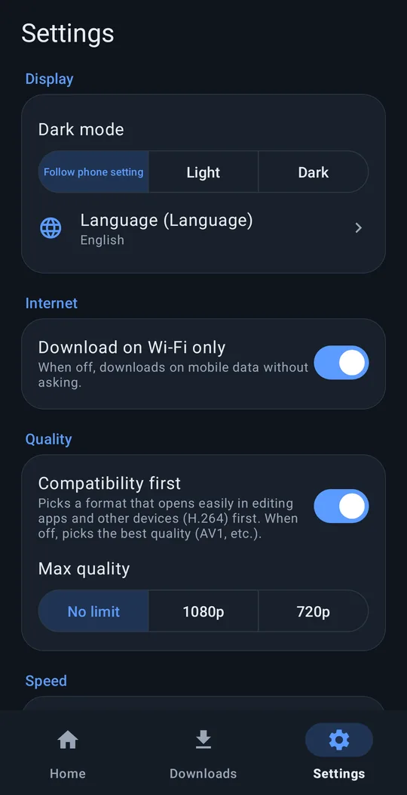

Collect reference videos on your phone.
Paste a link and download — or open the page in the built‑in browser, play the video and tap ⬇ Download on top of it.
Android 8.0+ · 64‑bit ARM · free · no ads · no account
How it works




See it in action
Paste a link, tap Download, and it starts right away. The download keeps going with a progress notification, even after you leave the app or turn the screen off.
Features
Paste a link
Works with most popular video sites.
Download button on videos
In the built‑in browser, a Download button appears on the video the page plays — works on many sites a link can't handle.
Ready for editing
Saved to Movies/VideoRef. "Compatibility first" picks H.264 + AAC so editing apps open it right away.
Works in the background
Keeps downloading with the screen off. "Download on Wi-Fi only", max resolution.
10 languages
English, 한국어, 简体中文, 繁體中文, 日本語, Español, Deutsch, Français, Português (Brasil), Русский. Light / dark theme.
Nothing sent to us
No ads, no tracking, no account. Privacy policy
Install
Open the downloaded APK on your phone. If asked, allow your browser or file app to install unknown apps.
A Google Play edition is coming. Because of Play policy it has fewer supported sites and updates its download engine only with app updates. Both editions can be installed side by side.
Problems?
Settings → Help → Report a problem writes a mail to support@4dir.net with the app log attached. Source code and issues: GitHub (GPL‑3.0).
Like it? Support on Ko‑fi